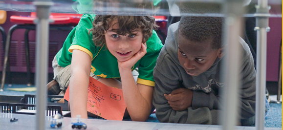
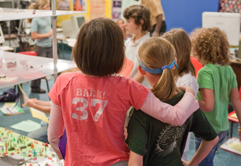

The World Peace Game is a hands-on political simulation that gives players the opportunity to explore the connectedness of the global community through the lens of the economic, social, and environmental crises and the imminent threat of war. The goal of the game is to extricate each country from dangerous circumstances and achieve global prosperity with the least amount of military intervention. As “nation teams,” students will gain greater understanding of the critical impact of information and how it is used.


As their teams venture further into this interactive social setting laced with highly charged philosophical issues, the skills needed to identify ambiguity and bias in the information they receive will be enhanced and more specifically they will rapidly perceive that reactive behavior not only provokes antagonism, it can leave them alone and isolated in the face of powerful enemies. Beliefs and values will evolve or completely unravel as they begin to experience the positive impact and windows of opportunity that emerge through effective collaboration and refined communication.
In essence, as meaning is constructed out of chaos and new creative solutions are proposed, World Peace Game players will learn to live and work comfortably at the frontiers of the unknown.
John Hunter's TED Talk
Listen to John Hunter, the founder of The World Peace Game,
talk about the effects the game has had on his classroom.